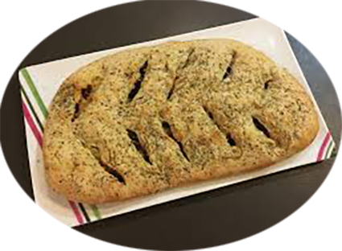

Fougasse

Ingrédients
- 250g de farine
- 20 g de levure de boulanger
- 3 cuillères à soupe d'huile d'olive
- 2 cuillères à café de thym
- Poivre
- Sel
- Olives noires
- 100 g de lardons
- 1 oignon
Recette
- Délayer la levure dans 2 cuillères à soupe d'eau tiède.
- Dans un saladier, mélanger la farine, 2 pincées de sel, 2 cuillères à soupe d'huile d'olive et la levure.
- Ajouter 15 cl d'eau et pétrir, jusqu'à ce que le pâte forme une boule élastique.
- Préchauffer le four à 210°C.
- Étaler la pâte sur le plan de travail fariné, pour lui donner une forme rectangle d'environ 3 cm d'épaisseur.
- Dans une poêle, faire revenir l'oignon émincé avec de l'huile d'olive pour le faire dorer.
- Laisser quelques minutes puis ajouter les lardons quelques minutes également.
- Retirer du feu et disposer (sans la graisse) au centre de la pâte.
- Pétrir afin que les lardons et les oignons se répartissent dans toute la pâte.
- Une fois terminé, disposer la pâte sur une plaque.
- Badigeonner d'huile d'olive et parsemer thym
- Avec un couteau faire des entailles en forme d'épis.
- Mettre au four 20 minutes.
- Déguster tiède ou froid.
|